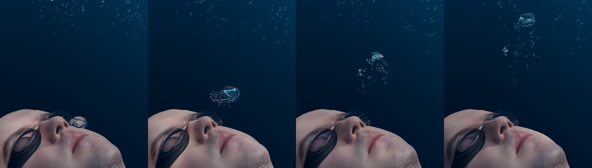

Underwater character exhalation produces a cascading plume of nonspherical bubbles, yielding a classic underwater sound. See the supplemental video for sound comparisons across bubble-frequency models.
A character exhales air underwater at intervals, producing large rising bubbles that deform substantially under buoyancy before reaching the free surface. These bubbles vibrate at low frequencies and undergo visible shape and topology changes mid-flight, requiring per-frame frequency updates as the shape evolves. BubbleGym tracks shape evolution and synthesizes characteristic deep, resonant underwater sound. An additional single bubble release example is included in Figure 7.
| What | Where |
|---|---|
| The scene | dataset/exhalation/ — BEM, learned surrogate and
Minnaert, each a separate trackedBubInfo sharing one
bubble graph. Tracked with git-LFS; run
git lfs install before cloning |
| Per-mesh BEM sweep | results/experiments/table01_timing_across_scenes/,
the source of this scene's row in Table 1 |
| End-to-end timing | Figure 8, results/experiments/fig08_end_to_end_timing/ |